电气电气安全#electrical
- 仅使用随箱附带的电源充电器充电，禁止使用非原装或参数不符的充电器。
- 禁止边充电边运行抓取任务。充电与运行请分开进行。
- 充电时请全程有人看护，远离可燃物。
- 出现冒烟、焦味、异常发热时立即断开电源，不要试图自行拆解。
- 长期停用时请按下电源按键关机，并取出遥控器电池。
从开箱清点到遥控器试车，完整走一遍。第一次用建议按章节顺序来：先读安全须知，再清点物料、上电联网、试遥控器。全程配实拍图，图中红圈红箭头即操作位置。
本产品含锂电池、运动机械结构与激光传感器。下面每一条都不是套话，违反了会伤人或者弄坏设备。
| 项目 | 要求 |
|---|---|
| 温度 | 0 ℃ ~ 40 ℃ |
| 湿度 | 小于 80%，无凝露 |
| 地面 | 平整硬质地面；避免地毯、门槛、强反光地面 |
| 光照 | 避免阳光直射镜头与场地标记 |
| 干扰 | 远离强磁场、大功率电机与变频设备 |
| 人员 | 禁止在人员密集或狭窄通道内全速运行 |
| 现象 | 处置方式 |
|---|---|
| 发出异响、机构卡死 | 立即按下电源按键关机 |
| 小车失控、无法停止 | 立即按下电源按键关机 |
| 冒烟、焦味、异常发烫 | 立即断电，远离设备，联系售后 |
| 电池鼓包、漏液 | 停止使用，单独隔离存放，联系售后 |
| 机械臂撞到异物 | 断电后检查立柱与线束，确认无变形再上电 |
拆箱先别急着上电。清点物料、核对编号、看一眼外观，这三件事花不了五分钟，但能避免后面一堆麻烦。
按表格逐项清点数量，检查外观是否完好。
| 序号 | 物料名称 | 数量 | 用途说明 |
|---|---|---|---|
| 1 | 产品手册 | 1 份 | 即本手册，请妥善保管 |
| 2 | 质检书 | 1 份 | 出厂质检记录，售后与保修凭据，请勿丢弃 |
| 3 | Apriltag 物块和颜色物块 | 1 套 | 视觉识别、抓取与搬运任务的场地道具 |
| 4 | 遥控器 | 1 个 | 手动控制小车移动 |
| 5 | 电源充电器 | 1 个 | 小车电池充电 |
步骤 1 · 清点物料：按 1.1 表格逐项清点数量，检查外观是否完好。
步骤 2 · 核对编号：检查质检书上的产品编号与小车机身标签编号是否完全一致。
步骤 3 · 外观检查：
步骤 4 · 异常反馈：出现缺件、损伤或编号不符时，请勿自行拆机，按附录 C 的联系方式反馈，并保留原包装。
先认一下整机三个视角，后面看接口和检查外观都要用。
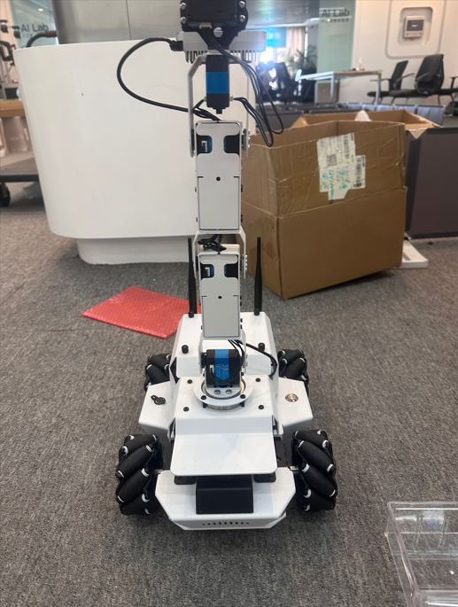
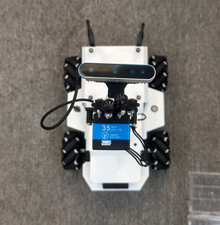
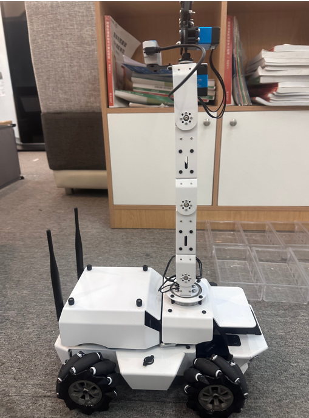
整车接口与板端接口分开看。下面第一张是整车上能摸到的几个口，第二张是板子上的细部。
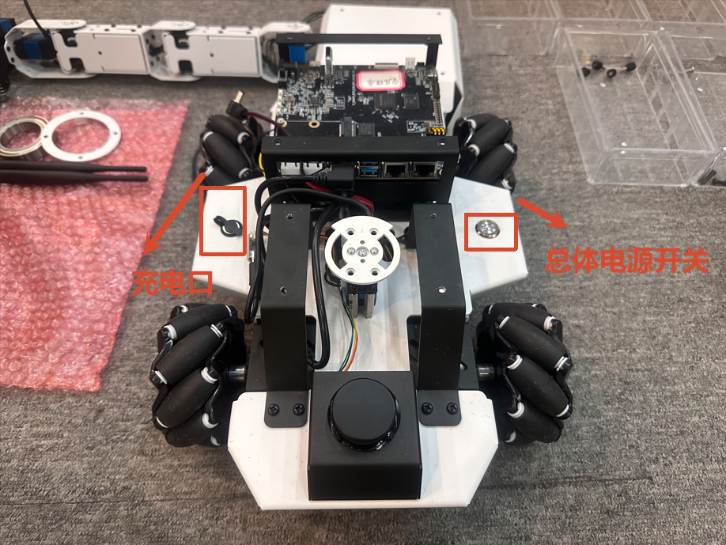
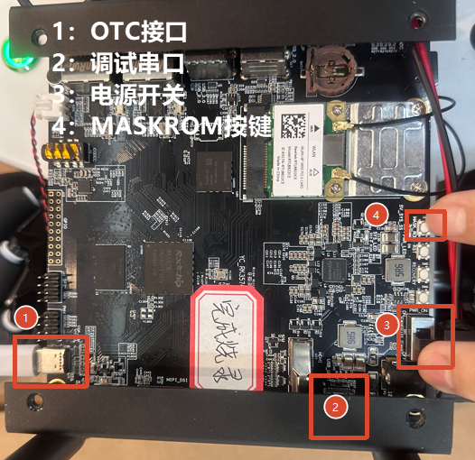
| 编号 | 名称 | 说明 |
|---|---|---|
| 1 | 电源开关 | 负责小车整体供电开关 |
| 2 | 充电口 | 电池充电口 |
| 3 | OTG 接口 | Type-C，用于接电脑调试 |
| 4 | 调试串口 | 接串口线查看系统启动日志 |
| 5 | 电源开关 | 板端开关；整车对外的开机 / 关机按键见下方说明 |
| 6 | MASKROM 按键 | 仅维修重装系统时使用，日常禁止按压 |
出厂时小车没有联网，所以串口是唯一可用的入口。顺序是：上电 → 串口登录 → 配 WiFi → 之后就能用 SSH 远程登录了。
上电前请逐项确认：
小车使用随箱电源充电器充电。首次使用前建议先充满电。
步骤 1 确认电源处于关闭状态。
步骤 2 按下电源按键开机。
步骤 3 观察下表现象：
| 现象 | 含义 |
|---|---|
| 板载 LED 规律闪烁（心跳模式） | 系统已通电并开始运行 |
| 蜂鸣器发出"滴"提示音 | 下位机固件启动正常 |
| 可听到风扇转动声 | 上位机已上电 |
| 串口终端输出启动日志 | 系统启动流程正常 |
上电到系统可用约需 30 秒（上位机启动过程约 20 ~ 30 秒）。正常启动后，登录横幅显示如下版本信息：
Welcome to Ubuntu 22.04.5 LTS (GNU/Linux 6.1.99-rk3576 aarch64)
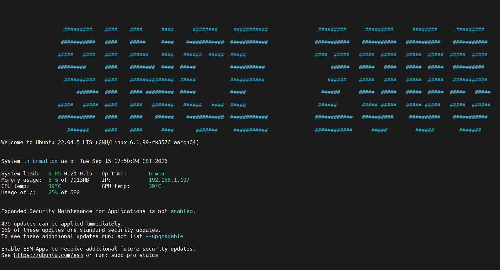
本节介绍三种登录方式。出厂未联网时串口是唯一可用的入口，因此首次开机建议按 2.6.1 → 2.6.2 的顺序操作，完成联网后即可改用 2.6.3 / 2.6.4 的方式。
接线方式：先将串口线接好，再给小车通电。
接线，将电脑和小车连接：
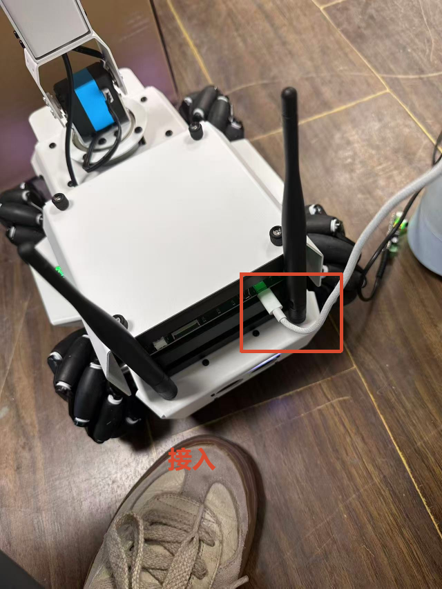
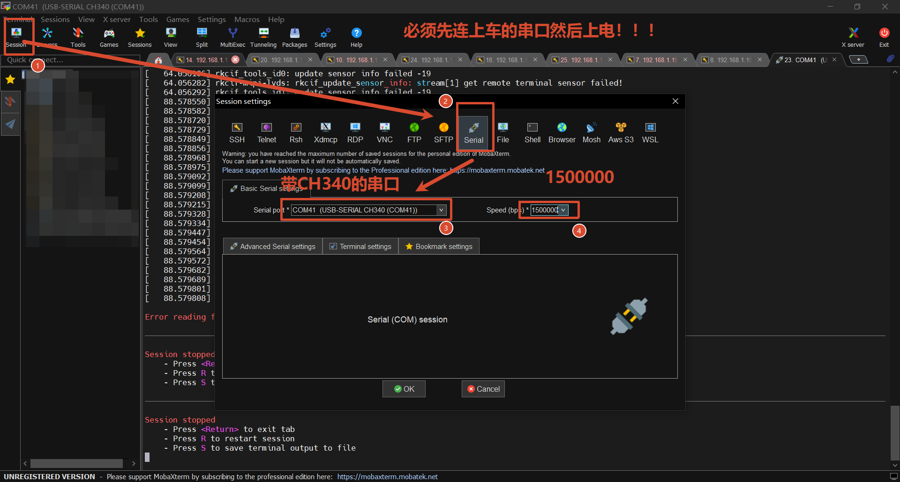
串口参数
| 参数 | 值 |
|---|---|
| 串口设备 | 带 CH340 芯片的 USB 串口（如 COM41） |
| 波特率 | 1500000 |
| 数据位 / 校验 / 停止位 | 8N1 |
| 配网方式 | 快速了解 |
|---|---|
| 方式 1 | 需要配合串口登录 |
| 方式 2（推荐） | 不需任何连接，无线网页配网 |
方式 1：命令行配网，在已登录的小车终端中执行：
sudo nmcli dev wifi connect <wifi_ssid> password <wifi_password>
连接成功的提示形如：
Device 'wlan0' successfully activated with 'b25b3fe8-6a35-4add-b712-e39bbdd8a700'.
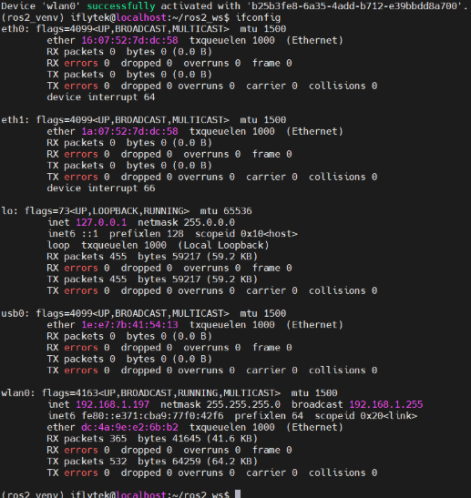
方式 2（推荐）：手机无线网页配网。打开手机，寻找配网 WiFi（名称为 XFLZ_xxxx），连接后自动跳转配网界面，手动输入对应 WiFi 名称与密码进行配网。安卓、苹果都可以使用。
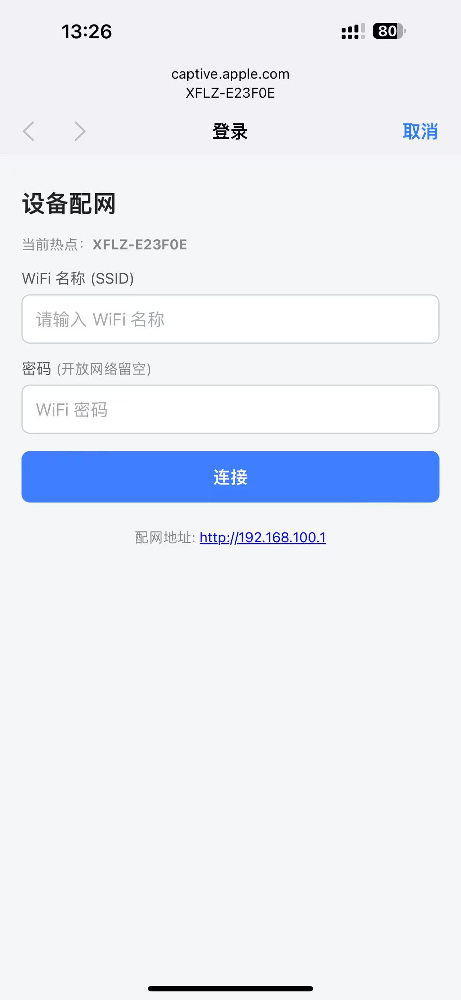
用 HDMI 线连接小车与显示器，在拓展坞上接入鼠标键盘，即可直接在本机操作。
接线，将电脑和小车连接，使用随箱工具中的终端软件，按下表配置：
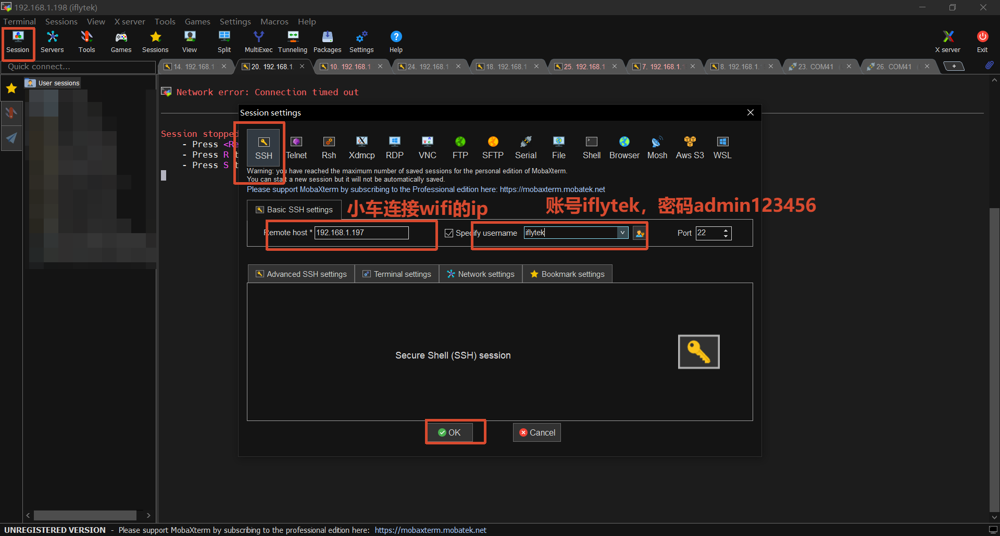
| 配置项 | 值 |
|---|---|
| 协议 | SSH |
| 主机 | 小车联网后分配到的 IP（示例 192.168.1.197） |
| 端口 | 22 |
| 用户名 | iflytek |
| 密码 | admin123456 |
步骤 1 · 查看本机地址
ifconfig
在 wlan0 段落中找到 inet 后面的地址，即为小车 IP。
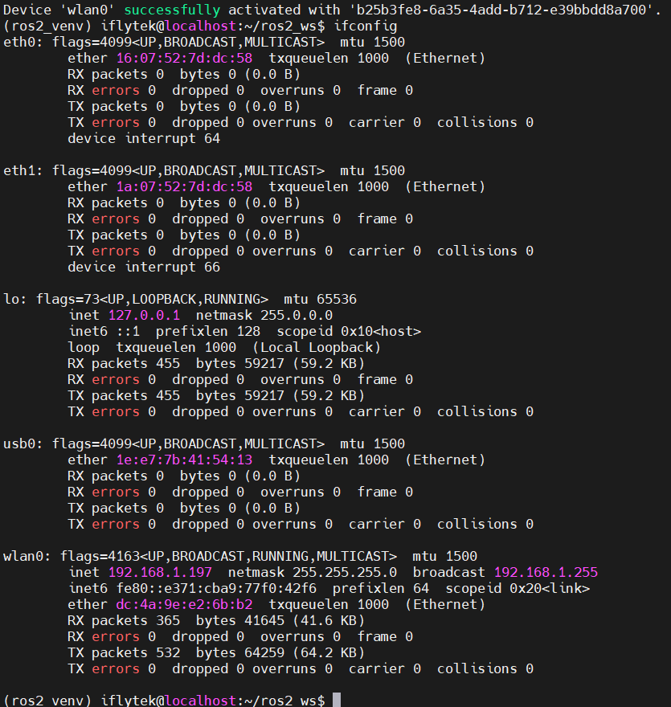
步骤 2 · 按下表判定
| 检查项 | 判定标准 |
|---|---|
wlan0 状态 | 处于 UP / RUNNING |
wlan0 地址 | 已分配到 inet 地址 |
电脑 ping 小车 IP | 有回包 |
| 外网连通 | ping -c 4 www.baidu.com 有回包 |
ifconfig 可见 wlan0 的 IPping 通小车 IP遥控器用于手动控制小车底盘移动与机械臂动作，是日常使用和现场检查的主要手段。不开电脑也能让车动起来。
步骤 1 · 连接接收器：将遥控器接收器插入小车下位机的 USB 接口，确认插入牢固。
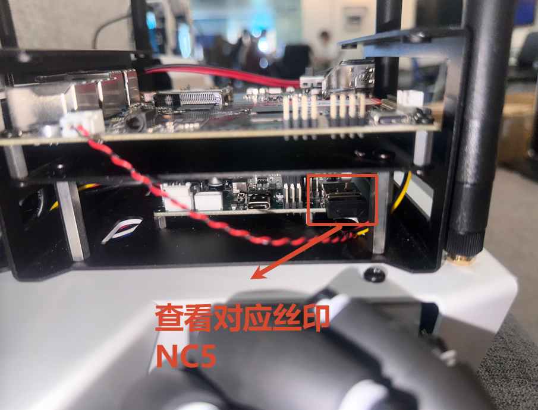
步骤 2 · 装入电池：为遥控器装入电池。
步骤 3 · 配对：按住遥控器中间 HOME 键，直到指示灯由闪烁变为常亮（亮黄色灯），表示配对成功，此时可以开始控制。
步骤 4 · 切换模式：多次按下 HOME 键切换模式，对应指示灯亮黄色灯、红色灯反复切换。
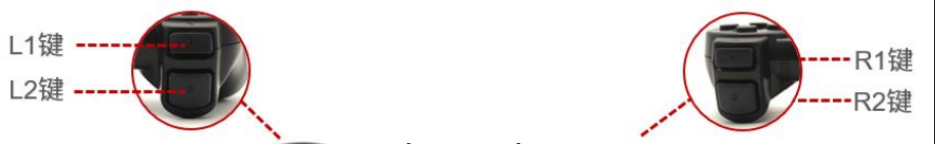
| 灯光 | 模式 |
|---|---|
| 亮黄色灯 | 底盘操控模式（摇杆控底盘，十字键控机械臂） |
| 亮红灯 | 机械臂操控模式（右摇杆控关节，十字键控底盘） |
后面按键表里的"ID 0 ~ ID 5"就指这张图上的编号。ID 5 是夹爪，ID 0 位于底盘隐藏处。
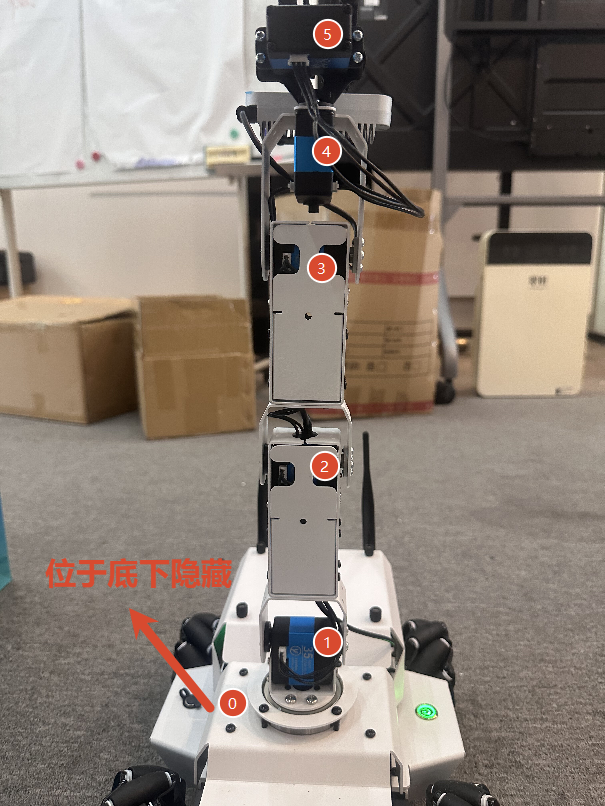
亮黄色灯模式下
| 摇杆 | 推动方向 | 功能 |
|---|---|---|
| 左摇杆 | 上 / 下 | 底盘前进 / 后退 |
| 左摇杆 | 左 / 右 | 底盘左平移 / 右平移 |
| 右摇杆 | 左 / 右 | 底盘原地逆时针 / 顺时针旋转 |
| 右摇杆 | 上 / 下 | 未映射功能 |
亮红灯模式下
| 摇杆 | 推动方向 | 功能 |
|---|---|---|
| 左摇杆 | 上 / 下 | 底盘前进 / 后退 |
| 左摇杆 | 左 / 右 | 底盘左平移 / 右平移 |
| 右摇杆 | 左 / 右 | 关节 4（ID 4）动作（顺时针旋转） |
| 右摇杆 | 上 / 下 | 关节 3（ID 3）动作（顺时针旋转） |
操作要点
按键采用边沿触发：按下瞬间机械臂开始动作，松开按键后停在该位置并保持，不会自动回位。每个动作的持续时间为 2000 ms。
亮黄色灯模式下
| 按键 | 功能 | 对应关节（舵机 ID） |
|---|---|---|
| HOME | 切换模式 | 无 |
| START | 机械臂复位 | 无 |
| L2 | 夹爪张开 | 夹爪（ID 5） |
| R2 | 夹爪闭合 | 夹爪（ID 5） |
| L1 | 关节低位动作（顺时针旋转） | 关节 4（ID 4） |
| R1 | 关节高位动作（逆时针旋转） | 关节 4（ID 4） |
| X | 关节低位动作（逆时针旋转） | 关节 3（ID 3） |
| B | 关节高位动作（顺时针旋转） | 关节 3（ID 3） |
| A | 关节低位动作（逆时针旋转） | 关节 2（ID 2） |
| Y | 关节高位动作（顺时针旋转） | 关节 2（ID 2） |
| ↓（下） | 关节低位动作（逆时针旋转） | 关节 1（ID 1） |
| ↑（上） | 关节高位动作（顺时针旋转） | 关节 1（ID 1） |
| ←（左） | 关节低位动作（顺时针旋转） | 关节 0（ID 0） |
| →（右） | 关节高位动作（逆时针旋转） | 关节 0（ID 0） |
亮红色灯模式下（注意十字键改成控底盘）
| 按键 | 功能 | 对应关节（舵机 ID） |
|---|---|---|
| HOME | 切换模式 | 无 |
| START | 机械臂复位 | 无 |
| L2 | 夹爪张开 | 夹爪（ID 5） |
| R2 | 夹爪闭合 | 夹爪（ID 5） |
| L1 | 关节低位动作（顺时针旋转） | 关节 4（ID 4） |
| R1 | 关节高位动作（逆时针旋转） | 关节 4（ID 4） |
| X | 关节低位动作（逆时针旋转） | 关节 3（ID 3） |
| B | 关节高位动作（顺时针旋转） | 关节 3（ID 3） |
| A | 关节低位动作（逆时针旋转） | 关节 2（ID 2） |
| Y | 关节高位动作（顺时针旋转） | 关节 2（ID 2） |
| ↓（下） | 底盘后退 | 无 |
| ↑（上） | 底盘前进 | 无 |
| ←（左） | 底盘左平移 | 无 |
| →（右） | 底盘右平移 | 无 |
同时按下 SELECT + START，或单独按下 START，全部 6 个舵机（5 个关节 + 夹爪）将回到中位，复位过程约 2000 ms。
| # | 要点 |
|---|---|
| 1 | 必须处于运动模式（亮黄色灯），否则摇杆无效。 |
| 2 | 防止串车：遥控器通用，多车场地使用前务必确认响应的是目标小车。 |
| 3 | 边沿触发：按下动作、松开停住；需要连续动作时反复按动，而非长按不动。 |
| 4 | 摇杆死区 ±20：轻微推动无响应属正常。 |
| 5 | 方向指示灯：小车会根据摇杆输入自动判断运动方向，并通过灯带显示方向状态。 |
| 6 | 若上位机程序正在运行并下发过底盘控制指令，遥控器可能暂时失效（见 4.8 故障表）。 |
这台车用了锂电池和麦克纳姆轮，维护重点就这两块：电池别亏电存放，轮子别沾灰。剩下的按周期检查一次就行。
| 项目 | 要求 |
|---|---|
| 充电时机 | 出现动力明显变弱、动作迟滞时即充电 |
| 长期不用 | 每 1 ~ 2 个月补电一次，避免亏电存放 |
| 充电环境 | 常温、通风、远离可燃物，充电时人不离开 |
| 禁止事项 | 禁止亏电长期存放；禁止使用非随箱充电器；禁止边充边跑任务 |
| 电池外观 | 出现鼓包、变形、漏液立即停用并隔离 |
| 电池规格 | 3S 锂电池，充满电电压约 12.4 ~ 12.6 V |
| 项目 | 要求 |
|---|---|
| 轮组 | 每次使用后用干布擦拭麦克纳姆轮辊子，防止积尘导致打滑与定位漂移 |
| 场地 | 每次测试前铺设防尘布，防止轮子沾灰 |
| 镜头 | 用镜头纸或气吹清洁深度相机与雷达窗口，禁止用手或粗糙纸巾擦拭 |
| 机身 | 断电后用微湿软布擦拭，禁止直接冲水，禁止使用有机溶剂 |
| 项目 | 要求 |
|---|---|
| 立柱垂直度 | 机械臂立柱应保持竖直，目视不可倾斜 |
| 钣金 / 铝型材 | 若发生弯曲会导致抓取失败，可徒手轻微回正；反复变形需返修 |
| 摄像头与夹爪对中 | 摄像头中心应尽量对准夹爪中心 |
| 上下盖合体 | 合盖时注意不要压到线束 |
| 螺丝 | 每季度检查一遍关键部位螺丝松紧 |
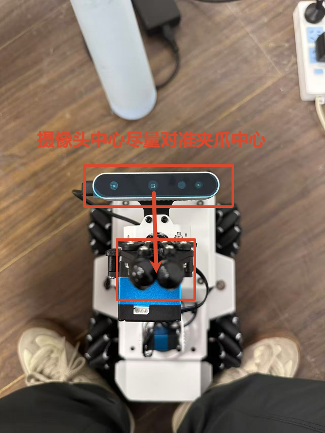
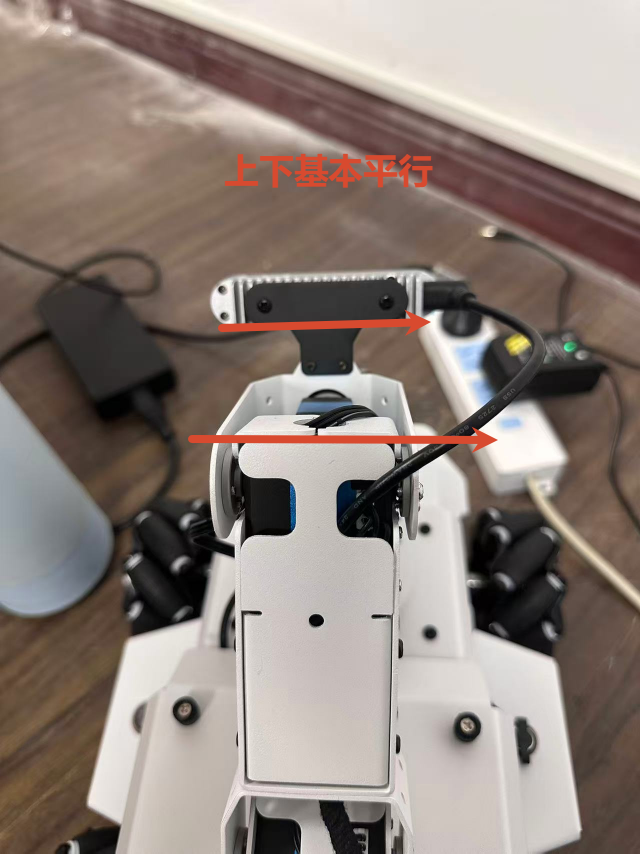
| 项目 | 维护要求 |
|---|---|
| 下位机固件 | 出厂已烧录。请勿自行重烧，如需升级请联系技术支持 |
| 舵机固件 | 出厂已烧录。关节舵机与夹爪舵机固件版本不同，不可混用，如需重烧请联系技术支持 |
| 导航配置 | 出厂配置完成。如需修改，请先备份原配置文件 |
| 系统时间 | 联网后应自动校时，请确认时间正确 |
| 项目 | 要求 |
|---|---|
| 存放环境 | 干燥、常温、无强磁干扰；建议原箱存放 |
| 电池 | 半电存放（约 50%），每 1 ~ 2 个月补电 |
| 运输 | 固定机械臂立柱与夹爪，避免运输中受力变形；设备与物块分开包装 |
| 长期停用 | 按下电源按键关机，取出遥控器电池 |
| 周期 | 保养内容 |
|---|---|
| 每次使用前 | 检查电量；擦拭轮组；检查立柱垂直度；确认遥控器可用 |
| 每次使用后 | 清洁轮组与镜头；关机断电；清点物块 |
| 每月 | 检查线束是否磨损；充电保养电池 |
| 每季度 | 紧固螺丝；检查夹爪开合；验证联网与定位功能 |
遇到问题先查表，八成问题这里都有答案。
| 现象 | 可能原因 | 处理方法 |
|---|---|---|
| 上电后无心跳闪烁 | 电量低 / 未按下电源按键 | 充电后重试；确认已按下电源按键开机 |
| 串口无日志输出 | 波特率错误 / 串口线未接好 | 波特率设为 1500000；重插串口线 |
| 无法 SSH 登录 | 小车未联网、无 IP | 先用本地登录完成联网 |
电脑 ping 不通小车 | 电脑与小车不在同一网段 | 确认两者连接同一 WiFi 热点 |
| 遥控器摇杆完全无反应 | 未进入 ANALOG 模式 | 按 ANALOG 键，红灯亮起后重试（见 3.1） |
| 遥控器 HOME 绿灯一直闪烁 | 未配对成功 | 按住 HOME 键直到绿灯由闪烁变常亮 |
| 遥控器控制到其他小车 | 遥控器为通用型，多车同场 | 只给目标小车通电，或逐台单独操作 |
| 遥控器推摇杆不动 | 处于"逐轮直驱模式" | 重启小车（见 4.4） |
| 机械臂抖动、动作无力 | 供电电流异常 | 检查电池电量，确认供电接线正常 |
| 电机转向相反 | 电机线接反 | 停止使用，联系技术支持 |
| 抓取抓不到 | 摄像头偏移 / 夹爪位置偏 / 钣金弯曲 | 重新对准摄像头与夹爪中心；回正钣金 |
| 定位漂移 | 轮子沾灰打滑 | 清洁轮组；确认场地平整 |
| 小车第一次启动报 odom 错误 | 历史残留自启服务 | 重启后确认；持续出现请联系技术支持 |
| 舵机无响应 | 舵机固件或 ID 异常 | 停止使用，联系技术支持 |
| 机械臂动作幅度异常 | 立柱变形 / 舵机异常 | 断电检查立柱，联系技术支持 |
| 术语 | 含义 |
|---|---|
| 上位机 | 小车上的主控计算机（RK3576），运行 Ubuntu 与 ROS 2 |
| 下位机 | 小车上的运动控制板（STM32F407VET6），负责电机、舵机、IMU、遥控器 |
| 麦轮 / 麦克纳姆轮 | 可实现全向移动的特殊轮组，四个轮协同可前后、横移、原地旋转 |
| 夹爪 | 机械臂末端的抓取执行器 |
| 舵机 | 机械臂关节的驱动电机，共 6 个：关节 5 个 + 夹爪 1 个 |
| Apriltag | 一种视觉定位标记，用于识别物块与场地位置 |
| 深度相机 | 可同时获取彩色图像与距离信息的相机，用于识别与抓取 |
| 激光雷达 | 通过旋转激光测距构建环境地图的传感器 |
| 心跳 LED | 板载状态指示灯，规律闪烁表示系统正常运行 |
| 逐轮直驱模式 | 上位机直接控制单个轮子速度的模式，此模式下遥控器失效 |
| ANALOG 模式 | 遥控器的一种工作模式，只有在此模式下摇杆才有效（ANALOG 红灯亮） |
| 死区 | 摇杆轻微推动时不产生输出的范围，本产品为 ±20 |
| 中位 / 零位 | 所有舵机回到中间位置（1500 μs），机械臂呈竖直姿态 |
| 高位 / 低位 | 关节的两个极限动作方向，分别对应舵机的两个极限位置 |
| IP 地址 | 设备在局域网中的地址，SSH 连接时需要 |
| SSH | 一种远程登录协议，可通过网络在电脑上操作小车 |
| 调试串口 | 用于输出系统启动日志的硬件串口 |
| 固件 | 烧写在硬件芯片中的底层程序 |
| 项目 | 值 |
|---|---|
| 系统登录账号 | iflytek |
| 系统登录密码 | admin123456 |
| SSH 端口 | 22 |
| 调试串口波特率 | 1500000（8N1） |
| 联网命令 | sudo nmcli dev wifi connect <ssid> password <password> |
| 查看 IP | ifconfig（关注 wlan0 的 inet 行） |
| 上位机系统 | Ubuntu 22.04.5 LTS（RK3576） |
| 下位机芯片 | STM32F407VET6 |
| 开机 / 关机 | 按键式开关：按一下开机，再按一下关机 |
| 电池 | 3S 锂电池，满电约 12.4 ~ 12.6 V |
| 供电额定电流 | ≤ 10 A |
| 遥控器配对 | 按住 HOME 键至绿灯常亮；摇杆需 ANALOG 模式（红灯亮） |
| 网络要求 | 小车与电脑需处于同一局域网 |
| 工具 | 用途 |
|---|---|
| MobaXterm | SSH 远程登录与串口终端 |
| 串口驱动 | CH340 USB 转串口驱动（连接调试串口时需要） |
如遇本手册未覆盖的问题，请提供以下信息并联系技术支持：